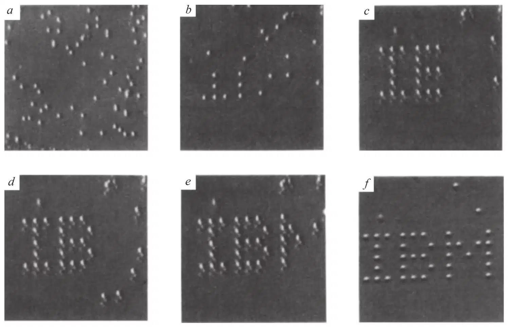
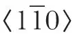
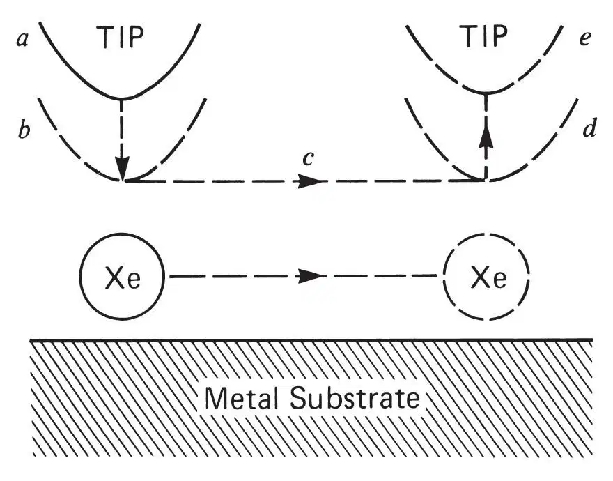
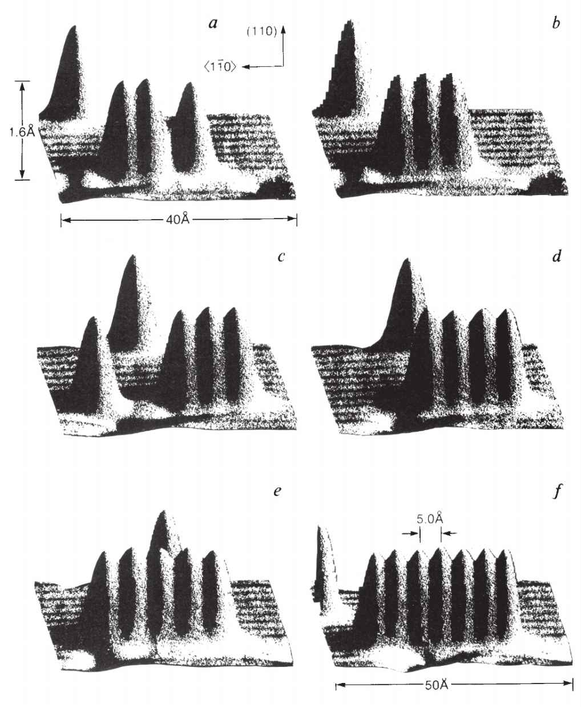

中文
中文D. M. Eigler and E. K. Schweizer
Editor’s Note
The scanning tunnelling microscope was invented in the early 1980s as a tool for imaging the surfaces of materials at atomic resolution. As its needle-like metal tip moves just above the surface, electrons can jump the gap to produce an electrical current that changes as the gap size varies, offering a topographic map. In the late 1980s it became clear that electrical pulses applied to the tip could remove or alter the surface material. Here Don Eigler and Eric Schweizer at IBM’sresearch laboratories in California show that the tip can be used to drag individual xenon atoms over a surface and position them at will. Their spelling of the company name in 35 atoms became an icon of nanotechnology. 中文
Since its invention in the early 1980s by Binnig and Rohrer1,2, the scanning tunnelling microscope (STM) has provided images of surfaces and adsorbed atoms and molecules with unprecedented resolution. The STM has also been used to modify surfaces, for example by locally pinning molecules to a surface3 and by transfer of an atom from the STM tip to the surface4. Here we report the use of the STM at low temperatures (4 K) to position individual xenon atoms on a single-crystal nickel surface with atomic precision. This capacity has allowed us to fabricate rudimentary structures of our own design, atom by atom. The processes we describe are in principle applicable to molecules also. In view of the device-like characteristics reported for single atoms on surfaces5,6, the possibilities for perhaps the ultimate in device miniaturization are evident. 中文
THE tip of an STM always exerts a finite force on an adsorbate atom. This force contains both Van der Waals and electrostatic contributions. By adjusting the position and the voltage of the tip we may tune both the magnitude and direction of this force. This, taken together with the fact that it generally requires less force to move an atom along a surface than to pull it away from the surface, makes it possible to set these parameters such that the STM tip can pull an atom across a surface while the atom remains bound to the surface. Our decision to study xenon on nickel (110) was dictated by the requirement that the corrugations in the surface potential be sufficiently large for the xenon atoms to be imaged without inadvertently moving them, yet sufficiently small that, when desired, enough lateral force could be exerted to move xenon atoms across the surface. 中文
The experiments were performed using an STM contained in an ultra-high-vacuum system and cooled to 4 K. The entire chamber housing the microscope was cooled to 4 K, which so reduced the contamination rate of the sample surface through adsorption of residual gases that no measurable contamination occurred over weeks. The stability of the sample and of the microscope due to the low temperature are such that one may perform experiments on a single atom for days at a time. This stability proved to be an operational necessity for performing these experiments. This notwithstanding, it is important to realize that the process that we describe for sliding atoms on a surface is fundamentally temperature independent. 中文
The nickel sample was processed by cycles of argon-ion sputtering, annealing in a partial pressure of oxygen to remove surface carbon, and flash annealing. After cooling to 4 K the sample was imaged with the STM and found to be of acceptable quality. Figure 1a is an image of the surface taken under constant-current scanning conditions after dosing with xenon to the desired coverage. This image was obtained with a tip bias voltage of 0.010 Vrelative to the sample, and a tunnel current of 10–9 A. Each xenon atom appears as a 1.6-Å-high bump on the surface, apparently at random locations. At this gap impedance the interaction of the xenon with the tip is sufficiently weak to leave the xenon essentially unperturbed during the imaging process. 中文

Fig. 1. A sequence of STM images taken during the construction of a patterned array of xenon atoms on a nickel (110) surface. Grey scale is assigned according to the slope of the surface. The atomic structure of the nickel surface is not resolved. The

direction runs vertically. a, The surface after xenon dosing. b–f, Various stages during the construction. Each letter is 50 Å from top to bottom. 中文
To move an atom we follow the sequence of steps depicted in Fig. 2. We begin by operating the microscope in the nonperturbative imaging mode described above to locate the atom to be moved and to target its destination. We stop scanning and place the tip directly above the atom to be moved (a). We then increase the tip–atom interaction by lowering the tip toward the atom (b); this is achieved by changing the required tunnel current to a higher value, typically in the range 1–6×10–8 A, which causes the tip to move towards the atom until the new tunnel current is reached. We then move the tip under closed-loop conditions across the surface, (c), at a speed of 4 Å per second to the desired destination (d), dragging the xenon atom with it. The tip is then withdrawn (e) by reducing the tunnel current to the value used for imaging. This effectively terminates the attraction between the xenon and the tip, leaving the xenon bound to the surface at the desired location. 中文

Fig. 2. A schematic illustration of the process for sliding an atom across a surface. The atom is located and the tip is placed directly over it (a). The tip is lowered to position (b), where the atom–tip attractive force is sufficient to keep the atom located beneath the tip when the tip is subsequently moved across the surface (c) to the desired destination (d). Finally, the tip is withdrawn to a position (e) where the atom–tip interaction is negligible, leaving the atom bound to the surface at a new location. 中文
Figure 1 is a sequence of images taken during our first construction of a patterned array of atoms, and demonstrates our ability to position atoms with atomic precision. The exact periodicity of the xenon spacing is derived from the crystalline structure of the underlying nickel surface (which is not resolved in Fig. 1). The nickel (110) surface has an unreconstructed rectangular unit cell and is oriented such that the short dimension of the rectangular surface unit cell runs vertically in the image. The xenon atoms are spaced on a rectangular grid which is four nickel unit cells long horizontally and five unit cells long vertically, corresponding to 14×12.5 Å. 中文
Although the STM tip is made from tungsten wire, the true chemical identity and the structure of the outermost atoms of the tip are not known to us. We find that for any given tip and bias voltage, there is a threshold height below which the tip must be located to be able to move xenon atoms parallel to the rows of nickel atoms, and a lower threshold height for movement perpendicular to the rows of nickel atoms. This is consistent with a simple model wherein the xenon interaction with the metal surface is approximated by pairwise interactions with the individual nickel atoms. Simple investigations showed that the magnitude or sign of the applied voltage had no significant effect on the threshold tip height. This suggests that the dominant force between the tip and the xenon atom is due to the Van der Waals interaction, but this tentative conclusion requires further investigation. 中文
In Fig. 3 we show a sequence of images demonstrating how a simple structure, the linear multimer, may be fabricated using this process. First we slide xenon atoms into a chosen row of nickel atoms. We next slide a xenon atom along the row to a position where it will bind with a neighbouring xenon to form a dimer. We repeat the process, forming a linear trimer, then a linear tetramer, and so on. From these images we find that the linear xenon chain along the  direction of the nickel (110) surface is stable, the xenon atoms occupying every other surface unit cell along a row of nickel atoms. Attempts to pack the xenon atoms closer were unsuccessful. We find the xenon–xenon spacing along the row to be uniform (excluding end effects) to within 0.2 Å. 中文
direction of the nickel (110) surface is stable, the xenon atoms occupying every other surface unit cell along a row of nickel atoms. Attempts to pack the xenon atoms closer were unsuccessful. We find the xenon–xenon spacing along the row to be uniform (excluding end effects) to within 0.2 Å. 中文

Fig. 3. Various stages in the construction of a linear chain of xenon atoms on the nickel (110) surface. The individual xenon atoms appear as 1.6-Å-high protrusions in these images. The rows of nickel atoms are visible as alternating light and dark stripes. Several point defects are visible in the nickel surface. a, The assembled xenon dimer. To the right of the dimer, a xenon atom has been moved into position for forming a xenon trimer. b, Formation of the xenon linear trimer. c–f, Various stages in construction of the linear heptamer, a process that can be completed in an hour. The xenon atoms are 5 Å apart, occupying every other unit cell of the nickel surface. 中文
We anticipate that there will be a limiting class of adsorbed atoms and molecules that may be positioned by this method. Many new avenues of investigation are open to us. It should be possible to assemble or modify certain molecules in this way. We can build novel structures that would otherwise be unobtainable. This will allow a new class of surface studies that use the STM both to fabricate overlayer structures and to probe their properties. The prospect of atomic-scale logic circuits and other devices is a little less remote. 中文
(344, 524-526; 1990)
D. M. Eigler & E. K. Schweizer*
IBM Research Division, Almaden Research Center, 650 Harry Rd, San Jose, California 95120, USA
* Permanent address: Fritz-Haber-Institut, Faradayweg 4-6, D-7000 Berlin 33, FRG.
Received 17 January; accepted 9 March 1990.
References:
1. Binnig, G., Rohrer, H., Gerber, Ch. & Weibel, E. Appl. Phys. Lett. 40, 178-180 (1982).
2. Binnig, G., Rohrer, H., Gerber, Ch. & Weibel, E. Phys. Rev. Lett. 49, 57-61 (1982).
3. Foster, J. S., Frommer, J. E. & Arnett, P. C. Nature 331, 324-326 (1988).
4. Becker, R. S., Golovchenko, J. A. & Swartzentruber, B. S. Nature 325, 419-421 (1987).
5. Lyo, I.-W. & Avouris, P. Science 245, 1369-1371 (1989).
6. Bedrossion, P., Chen, D. M., Mortensen, K. & Golovchenko, J. A. Nature 342, 258-260 (1989).
Acknowledgements. This work would not have occurred were it not for the patient and visionary management of the IBM Research Division.